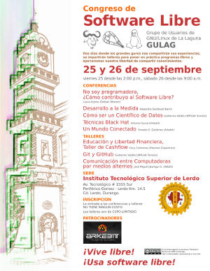
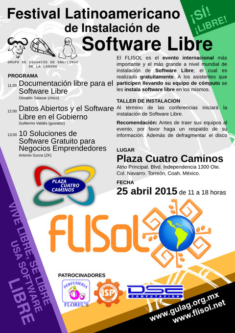

GULAG
Grupo de Usuarios de GNU/Linux de la Laguna.
Inicio
Congreso de Software Libre 2015

Con motivo del IX aniversario del Grupo de Usuarios de GNU/Linux de La Laguna (GULAG), y con el apoyo del Instituto Tecnológico Superior de Lerdo, se invita a estudiantes, maestras y maestros, empresarias y empresarios, hackers y público en general al Congreso de Software Libre a celebrarse los días 25 y 26 de septiembre del presente año: el día 25 iniciamos a las 14:00 horas y el día 26 a las 9:00 horas.
Próximamente: Congreso 2015
Los días 25 y 26 de septiembre estaremos celebrando una edición mas del Congreso de Software Libre el cual se celebrará en el Instituto Tecnológico Superior de Lerdo.
Resumen del FLISOL 2015

FLISOL 2015
Con el objetivo de promover y difundir el uso de Software Libre, el próximo sábado 25 de Abril de 2015 se llevará a cabo el Festival Latinoamericano de Instalación de Software Libre en Plaza Cuatro Caminos, atrio principal, en Torreón, Coahuila, México.
El Festival Latinoamericano de Instalación de Software Libre (FLISOL) es el evento internacional más importante y el más grande a nivel mundial de instalación de Software Libre; el cual es realizado gratuitamente, a los asistentes que participen llevando su equipo de cómputo, se les instala software libre en los mismos. El evento FLISOL lo ha venido realizando GULAG desde el año de 2006 ininterrumpidamente con el apoyo de diversos patrocinadores. El festival ha tomado tanta relevancia a nivel internacional que en ciudades de países NO latinoamericanos como Portugal, Estados Unidos y Canadá se han unido a su realización.
Distribuciones ofrecidas:
- Debian (recomendado)
- Guadalinex
- Manjaro
- Mint
- Trisquel
- Ubuntu
Fecha Lugar y hora
- Fecha: Sábado 25 de Abril de 2015.
- Lugar: Plaza Cuatro Caminos, Atrio principal. Blvd. Independencia #1300 Ote, Col. Navarro Torreón, Coahuila, México.
- Horario: De las 11 hasta las 18 horas.
Actividades
- Charlas
- Festival de instalación
- Taller de uso de GitHub
- Contacto con la comunidad de Software Libre local.
ATENCIÓN
Se recomienda que antes de asistir al evento haga un RESPALDO DE LA INFORMACIÓN IMPORTANTE y defragmentar el disco duro.
Programa
- 11:00 Bienvenida
- 11:00 AM Documentación Libre para el Software Libre por Osvaldo Salazar (Chico)
- 12:00 PM Datos Abiertos y el Software Libre en el Gobierno por Guillermo Valdés (guivaloz)
- 01:00 PM 10 Soluciones de Software Gratuito para Negocios Emprendedores por Antonio Gurza (ZK)
- 02:00 PM a 6:00 PM Installfest: Instalación de software libre en las computadoras que lleven los asistentes.
Evento dirigido a todo tipo de público: estudiantes, académicos, empresarios, trabajadores, funcionarios públicos, entusiastas y aun personas que no poseen mucho conocimiento informático.
Descargas
{kind=link}
Reseña Document Freedom Day 2015
El 25 de marzo se celebró el Document Freedom Day en Torreón con una conferencia en la Escuela de Sistemas de la U.A. de C.

Document Freedom Day 2015 en Torreón
El próximo 25 de marzo se celebrará el Document Freedom Day en Torreón con una conferencia en la Escuela de Sistemas de la UAdeC.
Reunión ordinaria - Febrero 2015
El sábado 14 de febrero se realizó la reunion ordinaria.
Reunión ordinaria - Diciembre 2014
El sábado 13 de diciembre se realizó la reunion ordinaria en Arkebit…